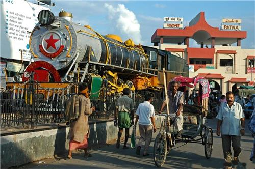

Patna the capital of Bihar ranks amongst the fastest developng cities of India. The capital city has a rich cultural and historical heritage dating back to 600 B.C. Patna is at an altitude of 53m above sea level and is situated on the southern banks of river Ganga. Once known as Pataliputra or Patalipattan it was a famous center of learning. Today it is the principal administrative, industrial and educational centre of Bihar. It is the second most populous city in Eastern India.

This city has a strong Buddhist and Sikh connection. Patna is a sacred city for Hindus, Jains, Buddist and Muslims alike. Everyyear thousands of Hindu, Jain and Buddhist pilgrims flock Patna for pilgrimage. It is a birth place of Guru Gobind Singh, the last Sikh guru .
Patna, the capital city of Bihar is one of the oldest inhabited places in the world (about 3000years ago). Patna has been an intrinsic part of ancient India’s two great empires - the Mauryas and the Guptas. It and was the capital of the Magadha Empire for over 1000 years (600BCE to600CE). Patna has been an imperial metropolis for many centuries and it happens to be among the oldest capital cities of the world. Also known as Pataliputra it was considered a center for fine arts and learning .Its history can be traced backup to the 6th century B.C. Over the years the capital city was renamed by the reigning kings, and thus Patna was known by many names-Pataligram, Kusumpura, Palibothra, Pushpapura, Pataliputra, Azeemabad.
All major festivals of India, especially the Diwali, Dussehra, Ram Navami are celebrated in Patna. Chatth Puja devoted to Sun God is one of the most popular festivals in Bihar.The city attains festive look on Id, Bakrid and on the eve of Christmas. All these adds to the secular look of the city. Apart from these every year Kite Festival in the city. The largestcattle fair in the world the Sonepur Mela is held at a place 25km from Patna on the the day of Karthik Purnima, in the month of November and also , Pitrapaksha Mela is celebrated in Gaya in September.